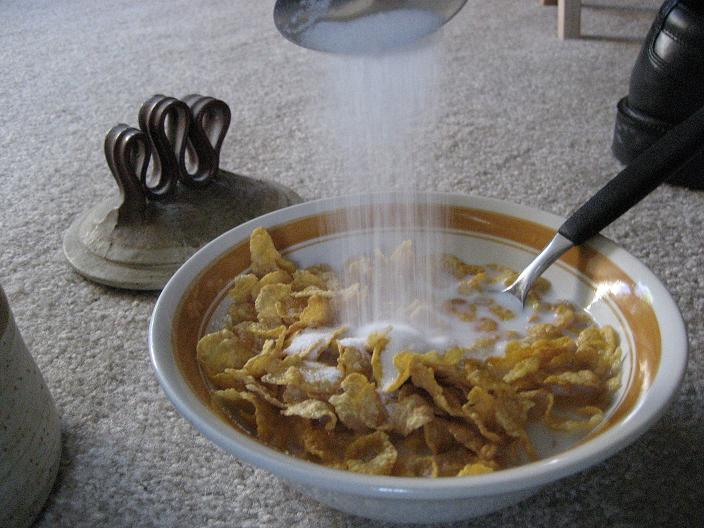

Caramelised Cornflakes

Description
Warm cornflakes with a caramelised layer of sugar on top. Perfect for students craving something sweet, or any individuals who need a comfort snack with a hint of childhood memories sprinkled in.
Ingredients
- Cornflakes, as much as your little heart desires
- Milk, just enough to cover the amount of cornflakes you chose
- Sugar. I would tell you to behave, but what the hell. Put as much sugar as you can. Less sugar than the weight of cornflakes is advised however.
Steps
- Put cornflakes in microwaveable bowl
- Put milk until it is just less than the cornflakes
- Murder with sugar
- Microwave for 2 minutes
- Eat and brace for sugar rush